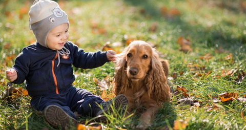
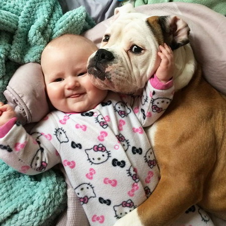

Prvi najbolji prijatelj vašeg deteta treba da bude pas!
Kada je reč o odnosu pasa i dece, ljudi imaju podeljena mišljenja.
Neki smatraju da deca ne bi trebalo da odrastaju uz kućne ljubimce i plaše se bolesti koje psi navodno mogu da
im prenesu. Na svu sreću više je onih koji razumeju istinsku potrebu deteta da od malih nogu pse posmatra kao prijatelje.
Zbog toga sam za vas izdvojila nekoliko najlepših fotografija pasa u igri sa decom!
Prema studiji koju je sproveo Univerzitet u Montrealu hormoni stresa kod dece sa autizmom drastično se smanjuju ukolko dete živi sa obučenim psom. Sa druge strane, Univerzitet u Finskoj došao je do saznanja da bebe koje odrastaju sa psom imaju manje šanse, čak za jednu trećinu, da se razbole od respiratornih bolesti, različitih infekcija, i da imaju jači imuni sistem.
Naravno, ne mogu baš svi psi preuzeti ulogu dadilje kao u američkim filmovima, ali uz malo truda i upornosti psa možete pripremiti na prisustvo bebe. Takođe ukoliko imate starije dete, objasnite mu kako da se ponaša prema ljubimcu.
Nemojte odvajati decu od životinja! Kad god vidite da neko sklanja svoje dete od vašeg psa, slobodno priđite i pokušajte da razuverite roditelja da je to što radi pogrešno. Psi su odlični životni saputnici i uz njih će vaša deca napraviti prve sigurne korake i pripremiti se da sutradan budu pošteni, saosećajni i odgovorni ljudi!